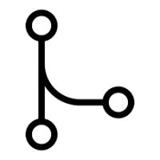

Agenda & Handbook
Onsite Agenda
Onsite Handbook
Industry Partner Talks
Distilled
Dataworks
Fundrecs
ServiceBot
Sunlife
SE2
Microchip
Scuri
VR Education
Git Workshop
Overview
Git Cheat Sheet
Git Workshop Introduction
Github Education
Basics
01: Commits
02: Branches
03: Merging
Digging Deeper
04: Conflicts
05: Rundown
06: GitHub
07: Rebasing
Organizing Repos
08: Tagging
09: Cherry Picking
10: Stashing
Advanced
11: Hooks
12: Config
13: Bisecting
14: Under the Covers
Git Workshop
WIT Computing
Overview
Git Cheat Sheet
Git Workshop Introduction
Github Education
Basics
01: Commits
02: Branches
03: Merging
Digging Deeper
04: Conflicts
05: Rundown
06: GitHub
07: Rebasing
Organizing Repos
08: Tagging
09: Cherry Picking
10: Stashing
Advanced
11: Hooks
12: Config
13: Bisecting

14: Under the Covers